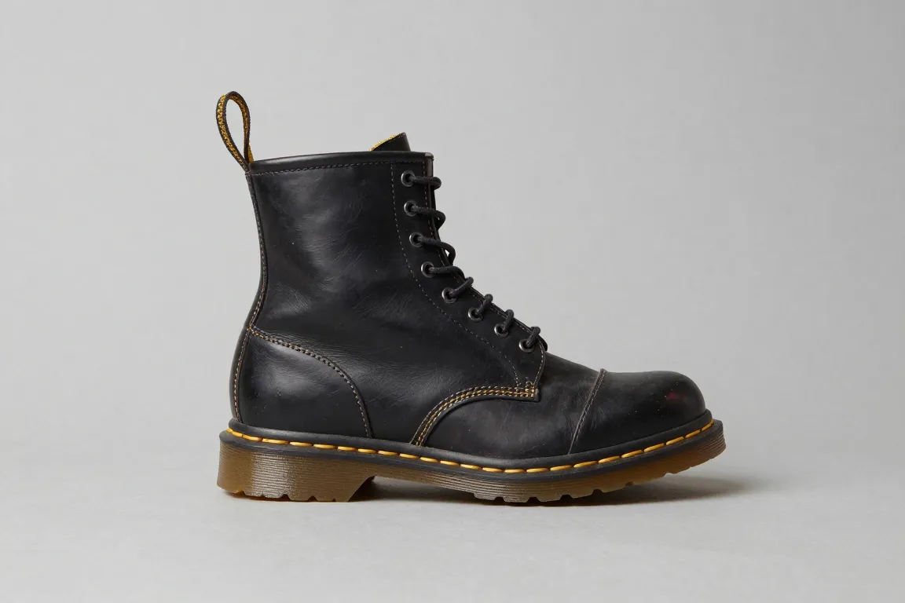

мода · 1960–present · также: Ботинок с восемью парами люверсов, Ботинок с воздушной амортизацией, Ботинок скинхедов и панков
Шнурованный кожаный рабочий ботинок, ставший значком молодёжи. Гладкое голенище из телячьей кожи, от восьми до четырнадцати люверсов, жёлтая строчка рантового шва и толстая подошва с воздушной амортизацией. Его носят скинхеды, панки и другие.

Главная идея
Рабочий ботинок на молодой ноге — сигнал класса и группы. Он тяжёлый, простой, дешёвый и его трудно испортить. Владелец носит его, чтобы показать, что он свой.
Принципы дизайна
Режьте голенище из гладкой телячьей кожи 2 мм и шнуруйте через 8–14 люверсов.
Прошивайте рант жёлтой нитью, видимой на чёрной подошве.
Формуйте подошву с воздушной амортизацией толщиной 3–4 см, с рифлёным протектором.
Добавляйте петлю на пятке и фирменную бирку на петле.
Добавляйте стальной носок под кожей или оставляйте носок простым.
Полируйте кожу до жёсткого блеска или нарочно потирайте её.
Шнуруйте ботинок по заданной схеме; цвет шнурка обозначает группу.